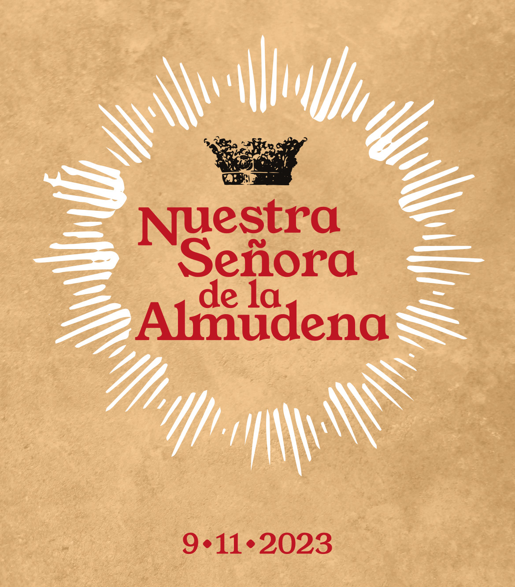

PROGRAMA MUSICAL FIESTAS DE LA ALMUDENA 2023
El 9 de noviembre es la fiesta de la Virgen de Almudena, patrona de Madrid. Por ello, la capital ofrecerá ese mismo fin de semana una amplia programación de actividades gratuitas, entre ellas, algunas musicales.

PROGRAMACIÓN
Desde el sábado 4 de noviembre hasta el domingo 12 habrá conciertos diarios de la Banda Sinfónica Municipal.
Compra aquí las entradas
El día principal de las fiestas, el 9 de noviembre se llevarán a cabo los siguientes eventos:
- 19.30h Concierto de la Escuela Superior de Música Reina Sofía en Auditorio Sony:
Recital de zarzuela / Aforo 350 butacas / Entrada libre. El concierto se publicará en la web de la Escuela y redes sociales. La entrada es gratuita. Los intérpretes serán antiguos alumnos de la Escuela: Maylin Cruz, soprano; Alejandra Acuña, mezzosoprano; Gabriel Alonso, barítono; y los pianistas acompañantes
Además, durante las fiestas se podrá disfrutar de una serie de conciertos benéficos:
-
11 nov: Banda Militar de Acuartelamiento del Ejército a favor de la comunidad de Sant'egidio (Catedral de la Almudena)
-
18 nov: Agrupación coral Iter a favor de Cáritas Diocesana (Catedral de la Almudena)